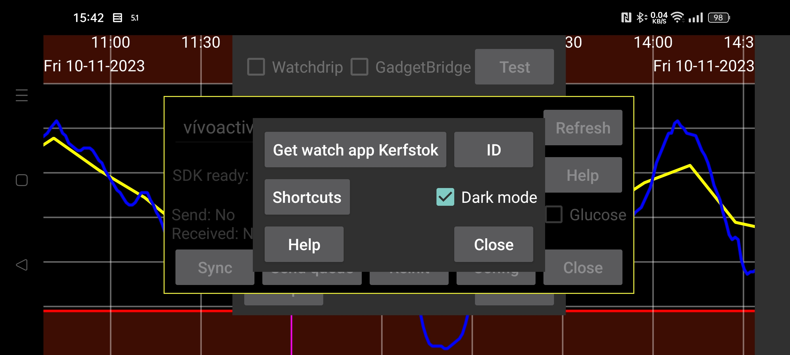

ar be de es fr nl pl pt ru tr uk uz zh en
Kod źródłowy Kerfstok można pobrać ze strony https://www.juggluco.nl/Kerfstok/Kerfstok-source.html). Użytkownicy mogą go dowolnie modyfikować. Każda aplikacja na zegarek ma unikalny identyfikator. Jeśli identyfikator jest inny niż domyślny, Juggluco musi go znać, aby komunikować się z aplikacją zegarka. Aby określić inny identyfikator naciśnij ID i wpisz 32 znakowy ciąg heksadecymalny. Juggluco na jednym urządzeniu może być połączone tylko z jedną aplikacją na jednym zegarku. Zmiany doprowadzą do utraty danych.
Skróty są wysyłane do aplikacji Kerfstok w zegarku Garmin, aby łatwo wstawić określone wartości.
Określ, czy aplikacja Kerfstok powinna być biała na czarnym tle, a nie czarna na białym.